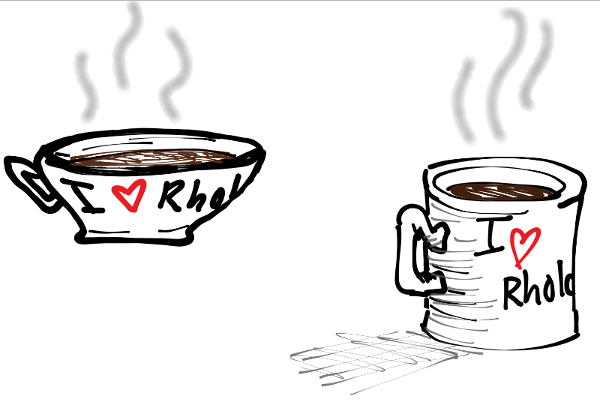

We learned last time how to send a message. Now it's time to learn how to receive a message. The general syntax is:
for(message <- channel){ // Do something here}
BTW, lines that start with // are called comments. They're just there for human coders and don't affect the way the program runs at all. They're a good idea, and you should use them! Anyone who reads your code (including your future self) will appreciate them.
Comm Events
Pizza shop can receive messages on its channel.
The following code sends a message on a channel for a pizza shop and the pizza shop receives it. The pizza shop acknowledges receiving the message by printing to stdout.
include pizzaOrder.rho
Your turn
Remember, in rholang things don't happen in order, they happen concurrently. The pizza shop code will work just as well if we put the receive first. Give it a try!
Send that message to a different channel like @"coffeShop". Did the acknowledgement print? Is anything left in the tuplespace?

Let's hit up the coffee shop.
Receiving Before Sending
Rather than the message appearing first, then someone receiving it, Greg is trying to receive first. Hopefully someone will send him a message so he can get his comm on!
When a send and a receive come together on a channel, it is called a communication event, or "comm event" for short.
Unlike normal mail where a message must be sent then received, the two can happen in either order or at the same time in rholang. It is just as cceptible to receive a message, then send it. Whenever a send and receive come together, a comm event takes place.
Contracts
The poor chef is too busy making sure he can receive orders to take care of his pizza.
Out pizza shop example illustrates comm events nicely, but it isn't very realistic to expect the pizza shop to manually issue a new receive every time an incoming order consumes theirs from the tuplespace.
Luckily it's possible to deploy code once, and have it run every time it receives a message. This kind of thing is called a "smart contract". Let's look at some code for a coffee chop that is much superior to the pizza shop.
include coffeeshop.rho here
Your turn
Order another drink from the coffee shop
Change the acknowledgement message
The channel is just named @"coffeeShop". Change it to be named after a specific coffee shop of your choosing.
Write a similar contract for our pizzaShop. (You'll remember the syntax more if you write it yourself rather than copy-pasting.)
Persistant For
There are actually two different styles of syntax in rholang to acheive this persistent behavior. We just learned about contract. The other option is called a "persistent for". Here is another way to write the coffee shop code.
include PersistentCoffeeShop.rho
Notice this is different from a normal for because it has a double arrow <= rather than a single arrow <-. The only difference between the persistent for and a contract comes when we start talking about blockchains. For now you can think of them as the same thing.
Quiz
Which of these things is not like the other?
Which send will produce a comm event with for (message <- @"grandmasSnapChat"){}?